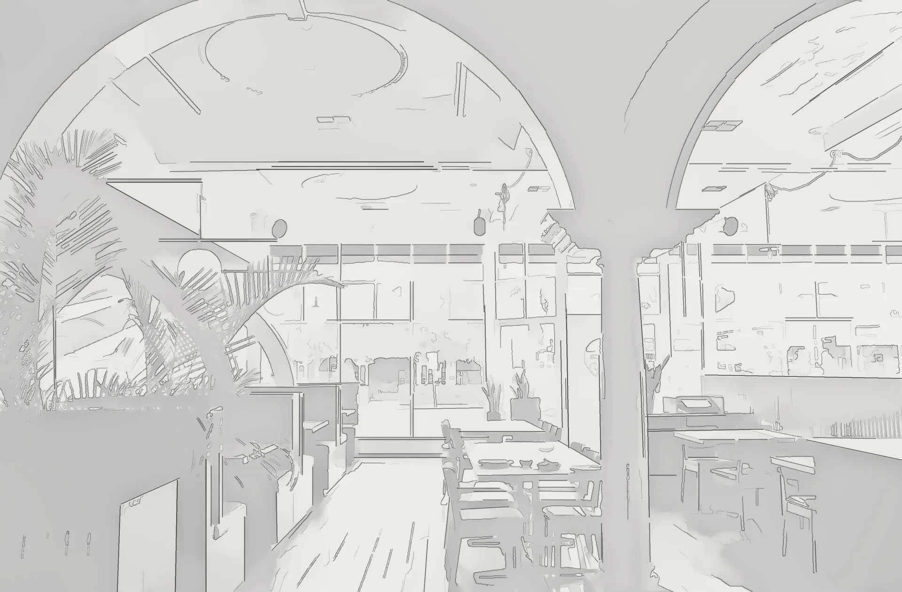
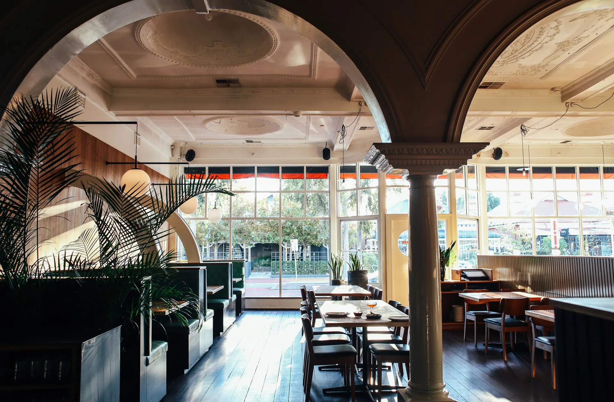

01 The drawing
Week 1 · Measured survey
An arcade down the middle, glass on two sides. Booths go on the blind wall; the tables take the light.
02 The sketch
Week 2 · Concept
Seen from under the arches, the way a guest first sees the room.
03 The shell
Week 5 · Plaster and making good
Ceiling roses restored, arches re-run in lime plaster, columns stripped back to the iron.
04 Joinery & fit-out
Weeks 7–10 · Booths, tables, the station
Booths on the blind wall. The service station sits behind the column, so the floor team never crosses the room.
05 Finishes
Weeks 11–12 · Floors and panelling
Boards sanded and oiled dark, walnut on the booth wall, green leather on the booths, the shopfront reglazed.
06 Lights on
Week 13 · Lighting
Opal globes at 2,700 K for the evening. By day the windows do the work.
07 Open
First service · 12:00
Full but calm by two, and every seat faces something worth looking at.
In numbers
64 venues designed and built since 2016, in nine cities.
One team
One contract and one senior lead, from the first drawing to the first service.
Approvals
Fire and exit layouts, extraction routes and signage, drawn to the conditions from day one.
Made in our workshop
Booths, the station and the bar are made off-site while the plaster dries.
Book a free site walkTested at full covers
We check the acoustics at full covers, so a table for two can still talk at nine.
In their words
“Turnover went up and the room got quieter. I didn’t know both were possible.”
Chef-owner, Ember
Read the projectDay 90
Ninety days after opening we come back and fix whatever service has found.
14:00 · Colonnade
Restaurant


Worth knowing
01 In numbers
64 venues designed and built since 2016, in nine cities.
02 One team
One contract and one senior lead, from the first drawing to the first service.
03 Approvals
Fire and exit layouts, extraction routes and signage, drawn to the conditions from day one.
04 Made in our workshop
Booths, the station and the bar are made off-site while the plaster dries.
Book a free site walk05 Tested at full covers
We check the acoustics at full covers, so a table for two can still talk at nine.
06 In their words
“Turnover went up and the room got quieter. I didn’t know both were possible.”
Chef-owner, Ember
Read the project07 Day 90
Ninety days after opening we come back and fix whatever service has found.